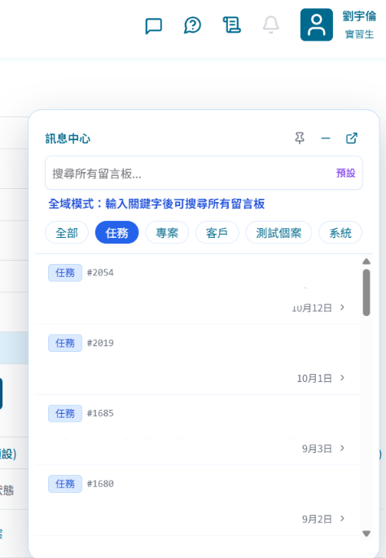
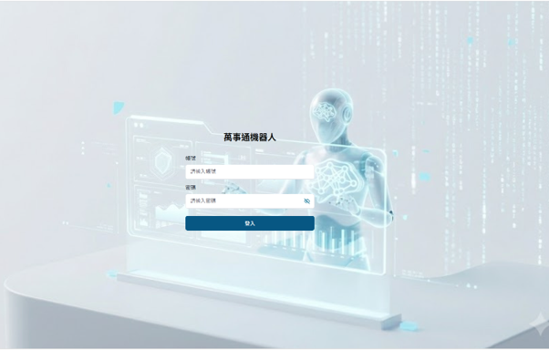
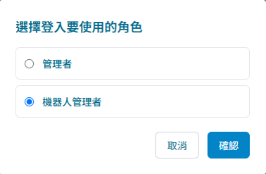
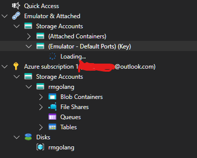
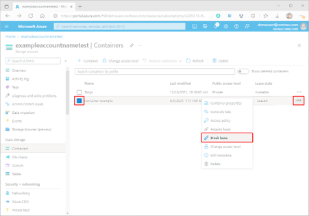
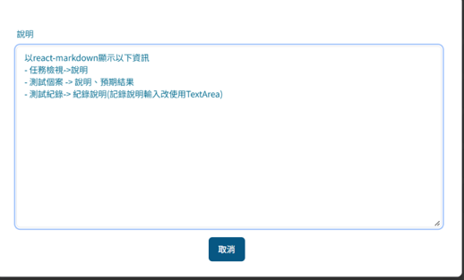
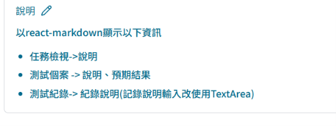
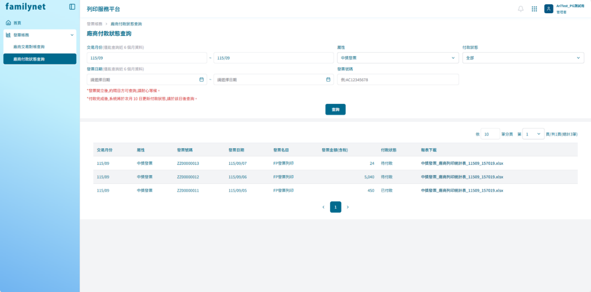
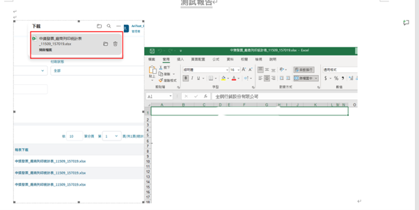

這是我第一個系統分析與開發的項目，我們要在現有的系統上新增一個訊息的功能，從確認資料庫到描繪figma確認樣式以及撰寫API和需求文件都是由我們完成，雖然上線後一開始很多人都不習慣，但是根據使用者的回饋後調整將這個功能越做越好。

這隻專案是做AI機器人對話的後台處理功能，因為我原本沒有寫過登入的功能所以花了很多時間在做調整以及找參考資料，因為我們的帳號密碼是有綁定公司的帳號的，所以會多走一層驗證，並且網址的部分，我們也有做加解密，所以在這個任務中我學到了很多後端如何處理登入這件事的流程。


其實我在一開始的時候完全不知道blob 是甚麼，以及他的container是幹嘛的，所以我像SA詢問了很多有關於這個的資訊以及在開發過程中也有多次的去確認在設計上是否有其他額外的限制，像是container的字元數無法超過16，超過的話就無法成功在Azure上建立容器，因為這個也是後端，所以其實做起來滿有趣的，看到邏輯成功跑通並且後續我還有新增修改密碼和發送信件的功能，因為這次的任務，讓我更加了解如何從哪裡拿資料以及如何將遠端的Azure資訊做新增修改刪除的功能。
(因為我沒有進入遠端azure的權限所以開發的過程中只能使用本機的做測試後在請SA在Azure上確認)


因為我們之前有做過訊息元件的開發，所以主管有新派過一個也是元件開發的任務給我，這個需求最主要是因為現在公司大部分的文件寫法很多都是由markdown的格式去寫，所以在填寫內容的時候也會習慣以md的格式去做撰寫，所以我把以前只能儲存純文字類型的textarea文件做了調整，找了react-markdown這個套件，讓調整了原本的元件。


這是我第一個完全全新開發的專案，因為以前都是做小部分的調整或者是開發API或畫面，但這個任務是完全的新專案只有架構和專案建置完成以外其餘的設定全部都沒有，所以其實滿緊張的，因為是第一個自己去做的專案，所以花了很多時間去做前後端的串接，包含後端的設定從登入到頁面的設計調整全部都要做，並且這份專案的API也是全新的，因為大部分都是呼叫資料庫取得資料之後就做簡單處理就好了，但因為這支API他還需要將資料儲存到內網的NAS裡面，所以連同驗證和NAS位置都需要在API中撰寫避免儲存的地方錯誤，所以花了很多的時間。


我們在學校時只有學習到如何使用MVC架構作出類似全端的網頁，但是公司使用的是react 跟 資料庫分離的架構，這讓我更加了解這樣做的目的是為了安全性以及避免整個程式邏輯混亂，以及各種不同的學習，我們部門經常做培訓會議，如果有新的技術，或者是錯誤處理的解決方式也會透過這個會告訴其他員工，讓這個經驗或新知是能夠讓大家知道。
這是我在實習過程中學到最重要的事情，我還在做專案的練習後，我每次遇到問題都會卡觀很久或者是需要去求去輔導員請他幫我看如何處理，然後我都會看他是如何解決問題的，向是我的前端網頁出現了問題，他會開啟開發者工具去看說裡面的程式碼哪裡錯誤或者是他的頁面排版是長怎樣的，以及API傳遞的資訊是否正確，資料的格式之些，在我以前在學校學習時其實很少會開啟開發者工具去看到底是哪裡的錯誤這樣子，都是透過終端機的錯誤訊息去處理而已，所以當終端機沒有錯誤時我會卡住很久，以及我之前的任務專案有一支，因為SP傳遞的參數不一樣，有修改過，所以程式碼也需要調整，但是我當初沒有意識到會是SP的參數錯誤，所以一直找不到錯誤點，最終是透過下中斷點的方式去擷取程式碼的參數去查看到底是哪裡傳錯了，這讓我遇到錯誤處理時的習慣也漸漸的改變了。
我們主管非常看重AI使用這一塊，他非常鼓勵我們去使用，並且也會教我們如何去製作和調適AI讓他能夠給出我們需要的產出，因為我們以前都是在用聊天框的方式去跟AI聊天請他幫我們做處理或者是產生程式碼這樣，但是產出的東西都不一定會完全按照我們的需求所產生出來，因此我覺得在這一塊我們主管對我們的培訓以及教學是非常有用的，再來就是AI的使用規範，我記得我那時候接到公司內部專案需求修改的任務，這是一支都由AI開發我們做人工審核的工作，但是我那時候做完之後我請輔導員看的時候，因為我只有確認功能以及畫面正常就請他幫我code review了，所以他那時候跟我說一定要檢查他產出的東西，不然這樣的話產出如果出現問題我們就會出大事了，所以一定要檢查他的產出，確認這些程式碼都是正確的或者是看起來沒問題才可以接受後再去實際執行一次看是不是真的正確才能夠交付，下一次會議時主管也特別說了這件事，他覺得AI會取代我們是正確的，但是會取代的是沒有好好利用AI反被AI利用的人，所以我們的角色會變成掌控AI並審核AI的人，而不是聽命於AI的人。
因為在這一年來AI的發展越來越快了，所以主管為了讓我們能夠學到以後可以帶走的東西，因此加上了系統分析與設計的練習，現在寫程式這件事情變得幾乎都是由AI去執行了，所以變成說，對於一個需求該如何確認，釐清以及跟我們目前現有的系統搭配來說，有哪些部份需要做調整或者是可以沿用得，所以我們需要去練習說如何去當一個系統分析師，將客戶的需求確認後，將解決方案提供給客戶，一開始的時候會非常地不習慣，因為我們之前主要都是在做開發，是屬於讀需求書的那一方，但轉換為需要去製作需求書並且和客戶確認需求的一方會非常地不習慣，像是很多名詞解釋，以及客戶所提供的資訊我們需要把它做一個完整得確認，像是有些需求客戶沒有明確說明，但是我們可以從中了解說，這件事情是他的需求這樣子，所以需要去轉換角度，並且我覺得最難的部分是提供解決方案給客戶這件事情，因為我們會習慣用工程師的方式去寫我們解決方法，但是客戶可能完全不懂程式，那這樣的話他不懂他就無法很明確地確認這個解決方案是不是他想要的，所以將分析設計後的結果要很簡單，明確，容易理解這是我覺得最難的部分，再來確認好需求之後，寫需求書這個部分也很困難，因為我們需要對我們目前的系統和新設計的系統都要有很明確的了解，像是資料庫怎麼設計的，業務規則怎麼跑得，那些系統的設計，以及修改的話複雜度如何，這些都需要去做考量，一開始我有點操之過急了，主管就說需要慢下來，確認好之後釐清再開始做，不然的話做出來的東西也無法使用，客戶不同意也不付錢就等於做白工，雖然還在學習系統分析，但通過實務上的練習，讓我的思考方式新增了從原本的開發人員到目前系統分析師的角度去看一份需求。
我覺得我在工作中，主要都是學習者以及試錯者的角色。
我們主管非常鼓勵我們多多提問，因為不懂就問以及如果有問題盡早提出的話就可以盡早解決就不會拖到最後來不及的時候再解決，以及他在開會時都會叫我們一定要提出一個問題，不管是工作上，生活上，甚麼問題都可以提問，這樣也讓我們多了信心去提問。
現在可以結合AI去做我們的專屬老師，所以我覺得我的學習能力相比以前有進步了一些，因為現在很多技術都發展得太快了，很多新知識出來我們如果沒有跟進的話，或許別人已經在提升他的工作效率，而我們只能一步一步的慢慢來這樣子，而且我們主要都是透過實作來學習，所以能夠結合所學的知識配合實作來了解架構以及開發過程是讓我覺得學習能力提升的一大進步。
現在有很多方式去幫助我解決問題，像是傳統的問人或者是上網查，現在多了AI幫我們偵錯，但是有些方法我們還是需要去學習，像是開發者工具以及中斷點的應用這個部分都是非常重要的，因為AI處理時他頂多會顯示他的思考邏輯和結果，並不會告訴我們他到底怎麼做問題解決的，所以我覺得當AI無法處理時或者是我們自己都搞不懂問題的時候，我們能夠先找到問題並查看說到底是哪裡出錯，下一步在看是我們需要去問AI還是自己改就可以了。
因為我們部門會接到其他部門的SA所提供的需求任務，所以我們在執行專案的時候，我們在面對問題時或者是規格書寫的不清楚時，我們都需要跟SA溝通，像是我商品提報單那支專案，因為我做完之後可能我只有按照規格書裡的內容去做修改後就交付了，但是SA在測試時，他都會看很多相關的功能是否能夠持續運作，並看資料的流向這些的，所以當他測試失敗時都會再跟我們說請我們去修改，但是有時候可能不太懂的時候就會需要請SA跟我們說明這個資料流是如何跑的，以及我還需要調整哪些部份的功能，因為如果我們不提出我們的想法，SA就無法知道說我們到底還需要甚麼以及是否可以完整處理這個專案，所以我覺得我的溝通能力有提升，因為不管事任務需求或者是提出問題這些，如果我講得不明不白，那對方也會不知道我想表達的是甚麼這樣子一來一往就會花費很多的時間在溝通調整上面，所以在明確自己的想法後並告訴對方我的想法並且討論說後續的處理應該如何應對這是我在實習過程中所提升溝通能力的方式。
在這次的實習過程中，一開始發現從學校教學的和真正公司所用到的技術其實是有很大的落差的，所以在一開始的時候透過公司完善的培訓資料與熱心的同事幫助，讓我能夠快速的掌握公司所需要使用到的技術，讓我在實習開始時很安心，能夠專心的學習技術，再來就是開始實作時，會發現實作和學習完全是不同的樣子，學習時看懂了但是實作時，會發現需要完善的部分還有很多，所以這也讓我養成了持續學習的能力，並且在完成實作習題後，輔導員也會幫我進行code review，並且也會告訴我錯誤的地方和需要改善的地方並耐心的解釋給我聽，讓我受益良多，以及每次開會時，主管都會給我們很大的安心感，他讓我們只要有問題就提出來不要怕去問，並且也會在會議中解決我們的問題，以及教我們職場上不管是技術，溝通，學習方面的經驗，真的讓我感到非常得安心，在接收到任務專案後，因為每個專案的開發方式不一定相同，所以在接到任務後都會需要適應一下，但多做幾次後，就比較容易上手，並且也透過任務專案，讓我能夠不斷地把所學到的東西應用在實際工作中。
並且最讓我收穫更多的其實是開會的時候，因為我們每個禮拜會有培訓會議以及部門課會，主管都會分享新的技術以及目前部門的各專案進度還有新開發的專案的系統分析與設計分享，讓我們也能夠學到除了我們工作以外的能力，因為其實我們並沒有太多的機會去接到系統分析與設計的專案設計與規劃，我們目前的定位只是一般的開發者，以及未來的規劃是成為AI資深人員能夠設計AI，快速打造出符合需求且能夠自動開發的AI，所以其他部份我們其實很少會接觸到，但是透過開會的時間，我們可以瞭解到不同方面的知識以及主管也會把他的想法說出來，除了能讓在執行的同事了解與調整外，也能讓我們更加了解系統分析設計這一部分的實際做法。
整體來說，我覺得在實習的這段時間內，我學到了在開發時所需要使用到的技術，以及真實工作中，最重要的溝通與解決問題的能力，不管是與需求端的溝通或者是程式出現問題時我們應該如何去解決，以及在開發的過程中，遇到不懂的問題一定要去詢問SA或者是其他人，確認說這個規格書的內容我們了解的是不是正確的，雖然被QA退回其實滿常見的，但是如果連測試人員都沒發現等到上線交給客戶時，被客戶發現的話，反而得不償失，不如確認好自己理解的東西後詢問別人確認好之後再開始修改，這樣一來雖然會增加時間，但是能夠減少我們開發後所會造成的問題我覺得這個比較重要，以上這些對我來說都是非常寶貴的經驗，如果沒有實習提前進入職場體驗的話或許我還需要很久才能夠瞭解這些並且也更好的幫助我銜接未來進入職場的能力。